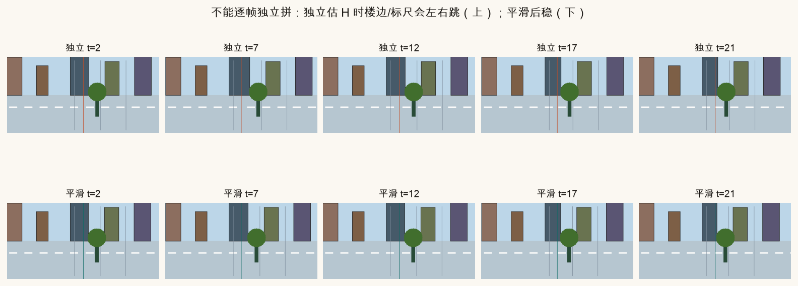
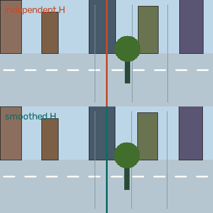
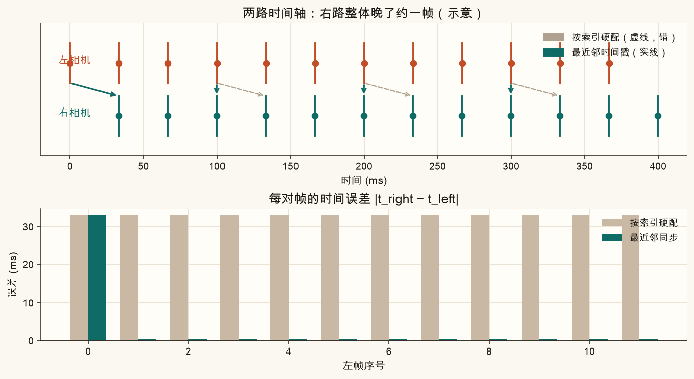
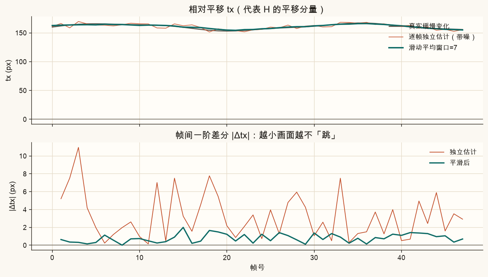
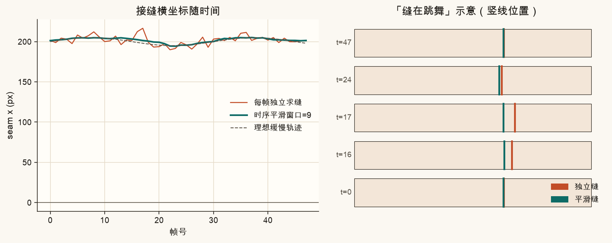
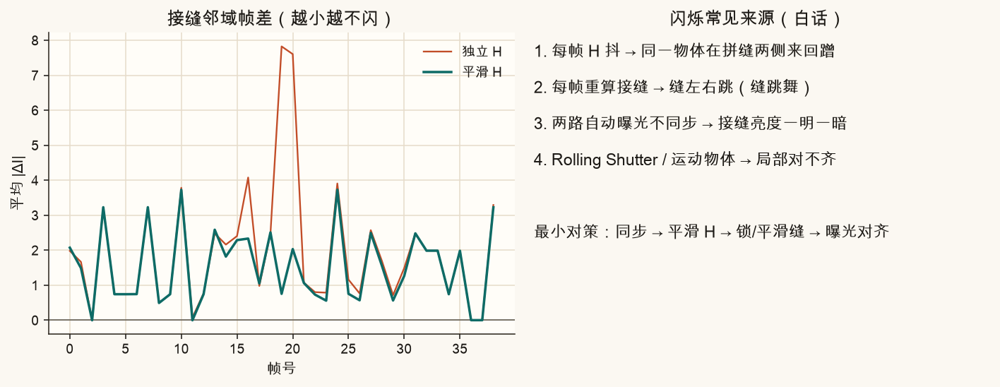
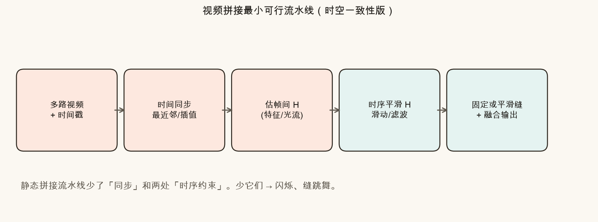
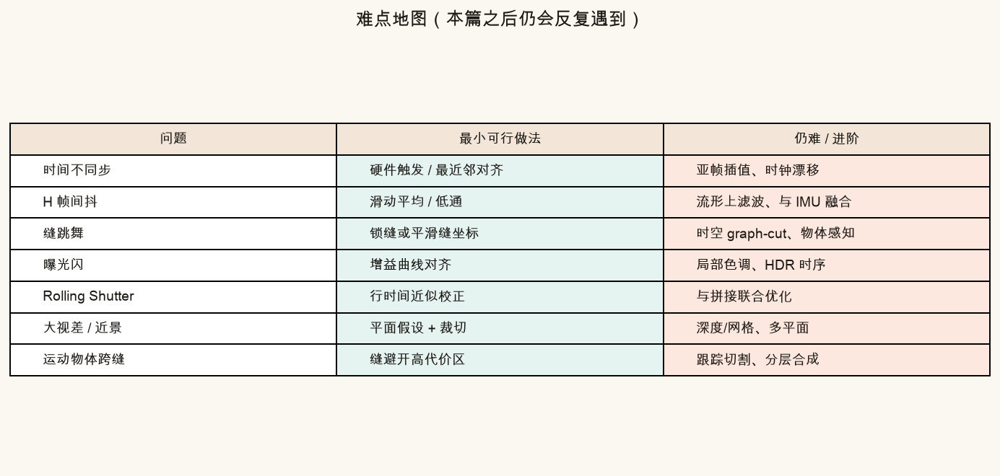

第 25 篇 · 视频 · 约 50 分钟
静态全景拼一张图就结束；多路视频是「每一帧都要拼，还要连着看」。若把第 8–11 篇的流水线原样套到每一帧，接缝会闪、楼边会抖，像缝在跳舞。本篇先看失败现象，再讲时间戳同步、帧间 H 平滑、接缝时序稳定，最后给出最小可行做法和难点地图。
图片拼接回答的是空间问题：两张（或多张）图如何对齐、如何藏缝。视频拼接多了一个时间轴：观众会连续看第 t、t+1、t+2 帧。人眼对「同一条边在画面里左右蹭」极其敏感——哪怕每帧单独看都还过得去，连起来也会难受。
「逐帧独立拼」指的是：对每一时刻单独跑一遍静态流水线——估一个 H、求一条缝、融合——完全不管上一帧用过什么。问题在于：
空间上「对齐了」不等于时间上「稳」。本篇把后半句叫做时空一致性：同一物理结构，在相邻帧里相对拼缝、相对画布的位置应平滑变化。


类比：你用两台摄像机拍同一条街，再「拼成一条更宽的街景视频」。如果每一秒都重新量两台机器的相对位置，量尺偶尔差几毫米，拼出来的马路中线就会在屏幕里来回扭——量每次都「差不多对」，但观众只看见扭。
多路视频首先要回答：左相机的这一帧，该和右相机的哪一帧配对？若两路帧率相同却启动时刻差了几十毫秒，或一路掉帧，按「第 i 帧对第 i 帧」硬配，叠在一起的其实是不同瞬间的世界——运动物体、手持晃动都会对不齐。
最小做法：
j*(t) = arg minj |tright[j] − tleft|
白话：给定左帧时刻 t，在右路时间戳里找离 t 最近的那个下标 j。误差超过半帧，就要警惕掉帧或时钟漂移。

硬件上常见：多相机共用触发（genlock）、或录一份公共 timecode。软件上若只有「大概同时按了录制」，就要靠拍一下手掌/闪光做事件对齐，再估固定偏移。本篇脚本用合成偏移演示最近邻，不涉及真实 IMU。
同步之后，每一对帧仍要一个几何变换把右图变到左图（或共同画布）。静态拼接里，这个 H 估一次就够；视频里每一帧都估一次，噪声会变成画面抖动。
直觉：真实相对姿态通常缓慢变化（相机刚体、云台缓动）；观测噪声是高频。于是可以对 H 的参数做低通——最简单是滑动平均。本篇演示把 H 简化成水平平移 tx（够说明问题；完整 3×3 可对元素平滑，或先分解成旋转/平移再平滑）。
tx̃[t] = (1/W) Σk=−r…r tx[t+k]， W = 2r+1
白话：看前后共 W 帧的估计，取平均当成本帧使用的平移。W 越大越稳，但突变（真转弯）会被抹钝——稳像里「跟手 vs 稳」的老权衡。

进阶才会碰到：单应在流形上，直接平均矩阵元素不完全严谨；可用四元数/李代数，或卡尔曼滤波，或与陀螺仪融合。零基础先记住：不要把生的逐帧 H 直接拿去 warp 出片。
第 10 篇用代价图找一条「穿过差异小的地方」的缝。视频里若每帧重跑一遍动态规划，缝的横坐标可能突然跳十几像素——尤其有人影、车灯掠过重叠区时。观众会看见一条「裂缝」在画面里左右窜，俗称缝跳舞。
最小对策，从易到难：

两者常一起出现，但机理不同，别混着调参：
| 现象 | 你看见什么 | 常见主因 | 先动哪里 |
|---|---|---|---|
| 几何闪 / 搓边 | 楼边、标线在搓 | H 未平滑、未同步 | 同步 + 平滑 H |
| 缝跳舞 | 一条分界线左右窜 | 每帧重算缝 | 锁缝 / 平滑缝 |
| 亮度闪 | 接缝一明一暗 | 两路 AE 不同步 | 曝光/增益对齐（第 11 篇） |
| 局部撕裂 | 近物双影、斜切 | 视差、Rolling Shutter | 见难点地图 |

不必先装 Python。下面用合成的「相对平移曲线」和「接缝位置」演示：噪声大时如何跳，窗口加大后如何稳，以及时间偏移如何搞砸配对。
橙线是带噪估计，青线是滑动平均。加大噪声看毛刺；加大窗口看青线变钝。下方小画画的是用当前 tx 拼出的「楼边相对接缝」位置——噪越大，橙点越晃。
打开「独立求缝」看竖线乱跳；打开「平滑缝」或「锁缝」对比。尖峰模拟有人影穿过重叠区时代价图突然改主意。
拖动右路时间偏移，看「按索引硬配」与「最近邻」的误差条谁更矮。
若你要做一个「能交作业 / 能演示」的双路拼接视频，不必一上来上光束法与深度学习。按这条链就够建立正确体感：

评价小技巧：在拼缝两侧各取一条竖带，算相邻帧灰度差的均值。平滑 H / 锁缝后，这条曲线通常会掉一截——图 25-6 左就是这种度量的合成版。
最小做法解决的是「时间上别自己吓自己」。下面这些问题本篇只点名，实战里会反复撞上——知道边界，比假装全能重要。

脚本用 NumPy 合成双路序列，演示同步、H 平滑、缝跳舞与闪烁对照，并写出全部课文图。
source .venv/bin/activate # 若尚未激活
MPLCONFIGDIR=/tmp/mpl-cache python code/ch25_video_stitch.py终端应出现「自检通过」，并写出：
assets/figures/ch25_independent_fail.png、ch25_timestamp_sync.png、ch25_h_smooth.png、ch25_seam_dance.png、ch25_flicker_compare.png、ch25_pipeline.png、ch25_difficulty_map.pngassets/images/ch25_frame_compare.pngch25_my_h_smooth.png、ch25_my_seam.png、ch25_my_sync.png打开 code/ch25_video_stitch.py，只改顶部「改这里」。课文对照图仍按固定参数重画；你的三张 ch25_my_*.png 会跟着变。
H_NOISE_STD 从 2.8 改成 0.5，再改成 5.0，对比 ch25_my_h_smooth.png 里橙线毛刺与 |Δtx|。H_SMOOTH_WINDOW 改成 3 与 15：窗口太小仍抖，太大则青线跟不上真实正弦弯。SEAM_SMOOTH_WINDOW 改大，看 ch25_my_seam.png 里尖峰是否被抹平。TIME_OFFSET_MS 改成 0、16、50，观察 ch25_my_sync.png 里青绿柱是否始终低于灰柱。先自己答，再展开。
因为人眼连着看。帧与帧之间的 H、接缝、曝光若不连续，就会出现搓边、缝跳舞、闪烁。空间正确不等于时间稳定。
启动时刻不同、掉帧、时钟漂移时会错。应用时间戳做最近邻（或插值）对齐，而不是相信帧序号。
权衡「稳」与「跟手」。窗口越大高频抖越少，但对真实快速相对运动的响应越慢，弯会被抹钝。要按场景选。
不一样。缝跳舞先锁缝或平滑缝坐标；亮度闪先做曝光/增益对齐。H 未平滑则两者都可能被放大。
多了时间同步，以及对 H、接缝（必要时还有曝光）的时序约束/平滑。少它们就容易闪烁、缝跳舞。
下一篇把拼接、二维视觉防抖、以及有 IMU 时的陀螺辅助 / RS 校正收成三则端到端实战：参数表、预期效果与自检清单。
第 26 篇 · 端到端实战三则（待写）